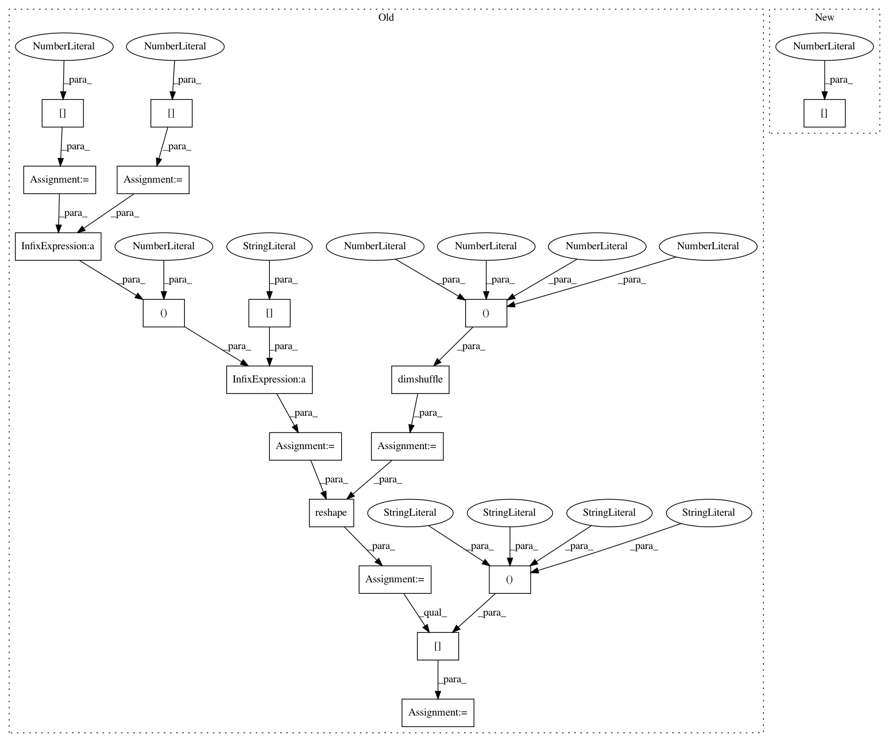

a6afe7c8149c61372b2aae6ae331d1584eb8a19e,keras/backend/theano_backend.py,,separable_conv1d,#Any#Any#Any#Any#Any#Any#Any#,1993
Before Change
pointwise_kernel = _preprocess_conv2d_kernel(pointwise_kernel, data_format)
th_padding = _preprocess_padding(padding)
input_depth = depthwise_kernel_shape[1]
output_depth = depthwise_kernel_shape[0]
depthwise_kernel_shape = (input_depth * output_depth, 1) + depthwise_kernel_shape[2:]
depthwise_kernel = depthwise_kernel.dimshuffle((1, 0, 2, 3))
depthwise_kernel = reshape(depthwise_kernel, depthwise_kernel_shape)
depthwise_kernel = depthwise_kernel[:, :, ::-1, ::-1]
conv_out = T.nnet.conv2d(x, depthwise_kernel,
border_mode=th_padding,
subsample=strides,
After Change
input_shape=image_shape,
filter_shape=depthwise_kernel_shape,
filter_dilation=dilation_rate,
num_groups=image_shape[1])
conv_out = T.nnet.conv2d(conv_out, pointwise_kernel,
border_mode=th_padding,
subsample=(1, 1),
In pattern: SUPERPATTERN
Frequency: 3
Non-data size: 18
Instances
Project Name: keras-team/keras
Commit Name: a6afe7c8149c61372b2aae6ae331d1584eb8a19e
Time: 2018-05-14
Author: me@taehoonlee.com
File Name: keras/backend/theano_backend.py
Class Name:
Method Name: separable_conv1d
Project Name: keras-team/keras
Commit Name: a6afe7c8149c61372b2aae6ae331d1584eb8a19e
Time: 2018-05-14
Author: me@taehoonlee.com
File Name: keras/backend/theano_backend.py
Class Name:
Method Name: depthwise_conv2d
Project Name: keras-team/keras
Commit Name: a6afe7c8149c61372b2aae6ae331d1584eb8a19e
Time: 2018-05-14
Author: me@taehoonlee.com
File Name: keras/backend/theano_backend.py
Class Name:
Method Name: separable_conv2d